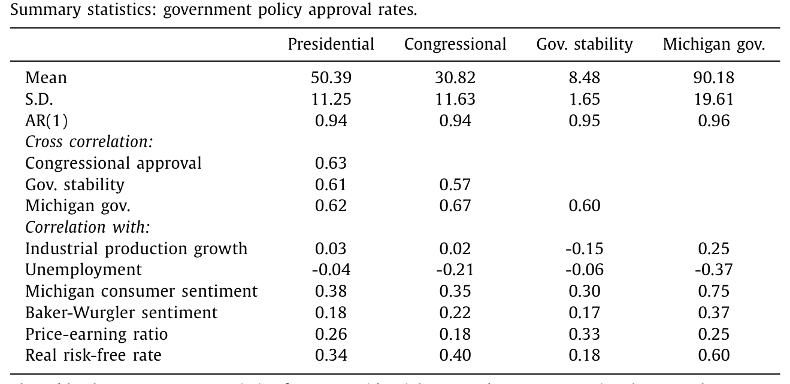
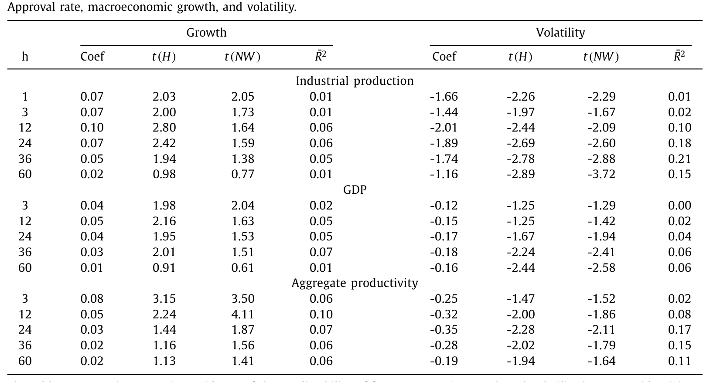
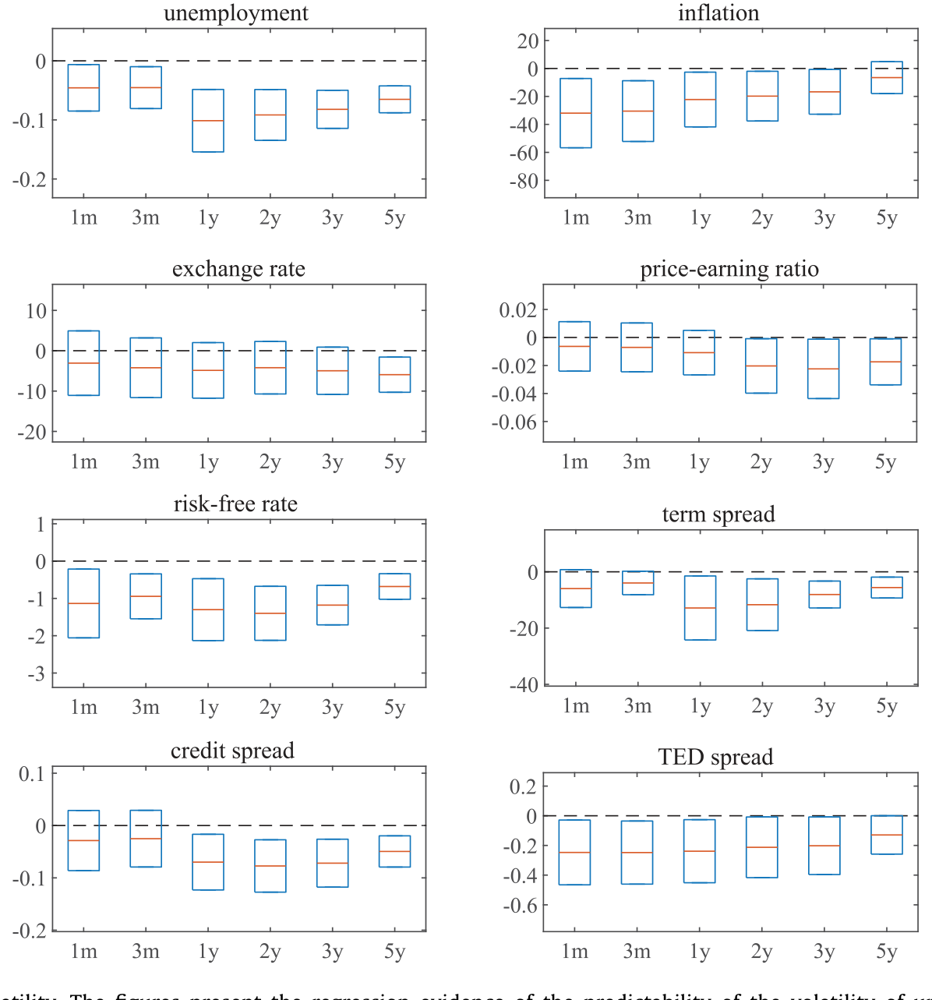
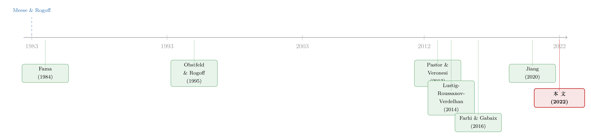

总统的「民意」，藏着三年后的美元
本文读的是 Liu & Shaliastovich (2022, Journal of Financial Economics)：美国总统的「施政支持率」（job approval）与美元价值存在惊人的同向联动——对发达经济体货币，支持率与美元指数的同期相关系数接近 49%；更关键的是，高支持率能在此后三个月到五年里预测美元的贬值与货币超额收益，R² 在一到两年的中期视角下高达 10%–15%。作者用一个两部门生产模型把它讲圆：支持率和美元，本质上是同一类「对宏观经济正向暴露的资产」的贴现现值。
1 一个不该成立的相关性
先说一件让人不太舒服的事。
汇率，是宏观金融里出了名的「不可预测」。自 Meese 和 Rogoff (1983) 那篇著名的论文之后，整个领域有一个近乎共识的结论：在样本外，任何基本面变量都很难打败「随机游走」。利率差、通胀差、产出差……这些教科书里堂堂正正的变量，放到汇率预测里大多铩羽而归，能起点作用的也往往只在很短的视角（几个月）内。
所以，当本文的两位作者告诉你：有一个变量，跟美元的同期相关系数能到接近一半，还能提前好几年预测美元走势——你的第一反应应该是怀疑。更何况，这个变量听上去和金融八竿子打不着：美国总统的施政支持率（presidential job approval）。就是盖洛普（Gallup）每隔几天问一遍全国一千五百来人的那个问题——「你赞不赞成总统现在干的活儿？」
一个民意调查的百分比，凭什么能跟全世界交易量最大的市场扯上关系？这就是本文要回答的核心张力。而真正有意思的地方在于：作者并没有把它讲成「政治情绪影响市场情绪」这种软故事，而是一步步把它逼成一个贴现率的故事——美元和民意，其实是同一枚硬币的两面。
2 支持率：一种「不随经济周期走」的东西
要理解这件事，得先搞清楚支持率到底是什么、不是什么。
样本是 1971:1 到 2019:12 的月度数据。基准变量是盖洛普的总统支持率，均值 50.4%，历史最低 25%（尼克松因水门事件辞职前一个月），最高 88%（9·11 之后那个月）。作者同时核对了另外三个口径——国会支持率、ICRG 的政府稳定指数、密歇根消费者调查里的「政府经济政策」分项——四者两两相关都在 60%–70%，在 1994 年后总统与国会支持率的相关甚至升到 80%。这说明「支持率」捕捉的不是某个总统的个人魅力，而是一种公众对政府整体的弥散态度，政治学里叫「政策心境」(policy mood)。
接着，一个自然的问题是：这玩意儿是不是只是经济景气的影子？景气好大家就给总统点赞，景气差就拆台——如果是这样，那它什么新信息都没有。
数据给的答案出人意料：支持率几乎是「非周期」的。它的一阶自回归系数 AR(1) = 0.94，比任何标准的商业周期变量都更持久；它在衰退期的均值 50.8%、扩张期 47.1%，几乎一样；它和工业生产增长的同期相关只有 0.03，和失业率的相关 −0.04，基本是零。

Table 1
换句话说，支持率既不领先、也不同步于当下的经济活动。它和当下的产出、就业「脱钩」了。那它到底装着什么信息？
3 它预测的不是增长，而是「波动」
这是全文第一个关键转折。
作者把未来 h 期的平均经济增长，投影到当期支持率上，跑的是一个标准的多视角预测回归：
$$\frac{1}{h}\sum_{j=1}^{h} y_{t+j} = \text{const} + \beta_h^{App}\, App_t + e_{y,\,t:t+h}$$
结果是：支持率对未来一到两年的工业生产、GDP、总体生产率、消费、投资、进出口、政府支出，统统是正向预测。比如对工业生产增长，h = 12 个月的系数 0.10、Hodrick 的 t = 2.80，调整 R² 约 0.06。效应不算惊天动地，但方向一致、统计上站得住。
不过，真正抓人的不是「增长」那一列，而是隔壁的「波动率」那一列。

Table 2
如表 2 所示，高支持率预测的是未来宏观基本面波动率的下降，而且这个效应比对增长的预测强得多、也持久得多。对工业生产的实现波动率，h = 36 个月的系数 −1.74、Newey-West 的 t = −2.88，R² 高达 0.21；到 h = 60 个月仍有 R² = 0.15。总体生产率的波动率在两年期的 R² 达 0.17。注意，对增长的预测在 Newey-West 修正下大多一两年内就失去显著性，而对波动率的预测，视角越长反而越强。
于是支持率的「人格」清晰了：它不是一个景气指标，而是一个前瞻的、关于未来不确定性的指标。老百姓在给总统打分时，似乎在理性地把「未来经济会不会更稳」这件事算了进去——这与政治学里「经济选民是前瞻的」(MacKuen et al., 1992) 那套说法严丝合缝。

Figure 4: Approval rate and volatility. The figures present the regression evidence of the predictability of the volatility of unemployment, inflation
还有一条暗线值得一提：高支持率还预测政府去国防的支出会上升——研发、医疗、教育这些「增长的无形决定因素」。支持率和总体研发支出的相关达 35%。这给了支持率一个区别于其它宏观变量的「独特通道」：它似乎提前嗅到了政府要在生产率的根子上花钱。这一点在后面的模型里会变成「政策提升了出口技术的生产率」。
4 反转：从宏观，跳到美元
铺垫到这里，论文完成了一次漂亮的跳跃。
既然支持率预示着「未来更高的增长、更低的波动」，而一国货币的价值——按所有现代宏观金融模型的逻辑——本就是对该国经济正向暴露的一份索取权，那么支持率就应该和美元同向。果然：
美元指数水平与支持率的同期相关，名义口径下 49%，对发达经济体货币尤其显著。更进一步，高支持率预测美元在未来的贬值——在三个月到五年的视角上统计显著，对宽口径和发达经济体口径都成立，对实际指数、名义指数、尤其是货币超额收益都成立。预测力最集中在一到两年的中期视角，单变量回归的 R² 能到 10%–15%。
等一下——高支持率，怎么既对应「强美元」（同期相关 +49%），又预测「贬值」（未来美元下跌）？
这恰恰是故事的题眼，也是它从「情绪」升华为「贴现率」的地方。把这两件事放一起，只有一个解释说得通：今天美元强，是因为它的风险溢价低了。高支持率出现时，人们预期政策带来低波动、低风险，要求的货币风险溢价随之下降，于是美元当下被抬高（强美元）；而较低的预期超额收益，正意味着美元在随后几年里会逐步「兑现」为贬值与较低的货币回报。换句话说，支持率压根不是在预测现金流，它在预测美元的风险溢价。
（关于「强势美元到底是供给、需求还是风险溢价撑起来的」，可参见《美元为什么强？——把一条汇率曲线拆回它的「供给与需求」》；而把汇率风险溢价拆进一张「违约保单」价差的另一种思路，见《汇率藏在一张「违约保单」的价差里》。）
那它会不会只是别的已知预测变量的「马甲」？作者把两个最有名的对手拉来对质：美国工业生产增长，以及 Lustig et al. (2014) 那个「平均远期贴水」(average forward discount)——后者配上美国 IP 增长，能解释一年内多达 25% 的美元回报变动。结果是：支持率和商业周期、和平均远期贴水都没有强相关；把这两个控制变量都塞进回归，支持率的预测力纹丝不动。而且二者的「档期」还错开了——标准控制变量在一年以内最有力，支持率的发力区间恰恰是一到两年的中期。它们不是同一件事。
5 政治的「保质期」：选举、府院一致、跛脚鸭
如果上面的故事是真的——支持率反映的是「政策对经济的有效作用」——那它就该有清晰的政治节律。作者于是做了三组很巧的横截面切割，这是我个人最欣赏的部分，因为它把一个时间序列相关性，钉进了可证伪的政治制度细节里：
- 选举之前更强。临近总统大选、政治不确定性升高时，支持率对货币的预测力显著增强。这正是「不确定性—贴现率」通道该有的样子。
- 府院一致时更强。当行政与立法两个分支「合拍」（政策更可能落地、更有效）时，效应被放大。
- 任期末尾变弱。到一届总统任期的尾声，支持率与货币风险溢价的关系明显减弱——与「跛脚鸭」(lame duck) 总统在最后几年办不成什么大事的常识吻合。
这三刀切下来，把「支持率—资产价格」的联动，牢牢绑在了政府把政策转化为经济结果的能力上，而不是某种空泛的「市场情绪」。
（顺带一提，「政治支持率」与股票横截面的关系是另一条线索——为什么和总统经济立场「对得上」的股票反而跑输？见《与总统「对得上」的股票，为什么反而跑输了？》。而「高政策不确定性却对应低隐含波动」的另一面，见《高政策不确定性，低市场波动率》。）
6 一个把两件事缝在一起的模型
实证讲完，剩下一个理论问题：凭什么支持率和美元是「同一类资产」？作者给了一个自称「illustrative（示意性）」的模型——它不求微观刻画具体政策，只求把直觉讲圆。
模型的骨架借自 Farhi 和 Gabaix (2016)：一个两部门生产经济，有可贸易品和不可贸易品。不可贸易品除了被消费，还可以被投资，用来在未来生产可贸易品；这个出口技术的生产率是随机的，可以理解为本国经济的「竞争力」或「有效性」。在此之上，作者用 Pastor 和 Veronesi (2012, 2013) 式的约简方法，引入外生的「政策因子」去影响经济基本面——不微观刻画政策本身，只假设政策会动摇生产率和波动率。
接着是最关键的一步：怎么定义「支持/不支持」？作者采用一个纯粹的资产定价视角——政策的增量价值，等于「有政策」相对于「没政策（status quo）时」未来经济指标差额的贴现现值。净值高，就是公众「赞成」政府；净值低，就是「不赞成」。把这件事写成一个最朴素的现值式：
为什么这个式子能把支持率和美元缝在一起？因为美元的价值同样是一份贴现现值——它是对本国总体经济正向暴露的索取权的现值。文中那句话说得很干脆：两者「都是对总体经济正向暴露的索取权的贴现现值」。既然分子（现金流 Y）和分母（贴现因子 M）是同一套东西，两者自然同向。
由此，全文的两条通道就长出来了：
$$\underbrace{\text{cash-flow channel}}_{\text{(growth)}}:\quad \mathbb{E}_t[\Delta Y] \uparrow \;\Rightarrow\; P_t^{\text{pol}} \uparrow,\;\; S_t^{\text{USD}} \uparrow$$
$$\underbrace{\text{discount-rate channel}}_{\text{(uncertainty)}}:\quad \text{Vol}_t \uparrow \;\Rightarrow\; M_t\ \text{vol} \uparrow,\;\; P_t^{\text{pol}} \downarrow,\;\; rx_t^{\text{USD}} \uparrow$$
- 现金流通道：当政策提升了出口技术的预期生产率，未来增长上行，支持率高，美元通过「更强的现金流」走强。这对应实证里「高支持率→更高增长」。
- 贴现率通道：当政策相关的不确定性升高，公众对政府的评价下降，风险溢价上行——美元当下被压低、未来的货币超额收益上行。这对应实证里波动率才是支持率最强的预测对象，也对应「高支持率→低风险溢价→未来贬值」那个看似矛盾的反转。
作者还给了一个异质代理人的扩展，让「政策净值」和「支持率」之间的对应更紧，但不改变上面的经济直觉。说实话，这个模型是「示意」而非「结构估计」，它的作用是给实证一个自洽的语言，而不是去拟合数字——这点作者很坦诚。
7 文献脉络
把这篇论文放回它的家谱里，会看得更清楚。
源头是汇率可预测性的那场「世纪难题」：Meese 和 Rogoff (1983) 立下样本外随机游走难以击败的基准，Fama (1984) 用利率差/远期贴水点出了著名的「远期溢价之谜」。此后人们发现，基于利率与汇率数据本身的预测变量大多只在短期有效；Lustig, Roussanov 和 Verdelhan (2011, 2014) 把「平均远期贴水」抬成了能在一年内解释约 25% 美元变动的强预测变量。

与此并行的是两条更「结构」的线。一条是宏观金融的汇率定价：Bansal 和 Shaliastovich (2013)、Colacito 和 Croce (2011)、Farhi 和 Gabaix (2016)、Verdelhan (2010) 等，把长期风险、稀有灾难写进货币溢价——本文的两部门模型正是接在 Farhi-Gabaix 之后。另一条是政策与汇率：Obstfeld 和 Rogoff (1995)、Devereux 和 Engel (2003) 的开放经济货币/财政政策传统，到近期 Jiang (2020) 把美元风险溢价与美国财政周期挂钩。再加上政策不确定性的资产定价（Baker, Bloom, Davis, 2016；Pastor 和 Veronesi, 2012, 2013；Kelly, Pastor, Veronesi, 2016）。
本文的位置很清楚：它不从利率或汇率数据里造预测变量，而是引入一个全新的、来自政治学的政策度量——施政支持率，并把它的预测力锚定在宏观波动率与货币风险溢价上。它同时呼应了政治学里「经济选民是前瞻的」(MacKuen et al., 1992；Blomberg & Hess, 1997) 的老传统。
评论与延伸（Q&A + 研究方向）
(a) 几个可能的疑问
Q：支持率和已有的「政策不确定性指数」(EPU) 是不是一回事？
不是。EPU（Baker, Bloom, Davis, 2016）是从报纸文本里数「政策+不确定」的词频，度量的是不确定性的「量」；支持率度量的是公众对政府施政的「估值」——一个净现值式的好坏评判。本文的论点恰恰是支持率同时载有现金流（增长）和贴现率（波动率）两类信息，且它对货币的预测在控制了标准变量后依然独立。两者是互补而非替代。
Q：49% 的同期相关，会不会就是个伪回归——两个高度持久的序列凑在一起的假象？
这是最该警惕的点。支持率
AR(1)=0.94、美元指数也极持久，水平对水平的相关确实容易虚高。作者的防线在于预测性而非同期性：他们跑的是未来货币超额收益（差分、近似平稳）对当期支持率的回归，并报告 Hodrick (1992) 与 Newey-West 的稳健t值，还做了样本外检验。预测超额收益这件事，比水平相关要硬得多。
Q：既然高支持率对应强美元，为什么又预测美元贬值？这不自相矛盾吗？
不矛盾，关键在区分「水平」与「预期回报」。高支持率→低风险溢价→美元当下被抬高（强）；但低风险溢价同时意味着未来的预期超额收益低，于是美元在随后几年里逐步回落。这正是贴现率通道的标准含义：价格高的时候，未来回报低。
Q：支持率「非周期」，却能预测增长，会不会只是因为它领先经济太多、被噪声淹没了？
有可能，但作者给的证据是系统性的：它对一到两年增长正向预测，对波动率的预测更强更持久（
R²到0.21），还对去国防的研发/教育支出有预测力（与研发的相关35%）。这些不像是随机噪声能凑出来的一致图案，更像是公众理性地把「未来政策有效性」算进了评分。
Q：这套结论是不是只对发达经济体货币成立？
证据确实在发达经济体口径上最强（同期相关
49%）。新兴市场数据多从 1980、1990 年代才开始，质量参差。作者把新兴市场更多当作稳健性而非主战场——这本身是个诚实的边界，也意味着「支持率→美元」更像是一个发达经济体之间的相对定价现象。
Q：换个政府度量，结论还在吗？
在。把基准换成国会支持率、ICRG 政府稳定指数、密歇根的政府经济政策分项，主结果都成立（四个度量两两相关 60%–70%）。这降低了「总统个人因素」驱动结果的担忧，支持了「政策心境」这个更弥散的解释。
(b) 几个可能的研究问题与提案
1. 把「支持率—风险溢价」搬到公司债/信用利差上。
【经济故事】本文说支持率预测宏观波动率下降。宏观波动率正是信用利差的核心驱动之一。那么高支持率是否预测未来信用利差收窄、违约率下降？尤其是对政策敏感行业（国防、医疗、能源）的债券，效应应当更强。【可行性】高。数据现成：TRACE 公司债成交、Moody's/合并 KMV 违约数据、Gallup 支持率。识别上可沿用本文的多视角预测回归，并用「府院一致」「选举前」做横截面切割。是 doable 的，且与本博客关注的信用市场直接对接。
2. 外资持有人对「政治风险溢价」的弹性。
【经济故事】如果美元强弱部分由政策估值驱动，那么外国官方/私人投资者对美债、美股的配置，是否随美国支持率系统性调整？高支持率（低风险溢价）时外资是流入还是流出？这关系到「储备货币地位」的政治根基。【可行性】中。需要 TIC 跨境资本流数据、外国央行持有量，识别上要小心反向因果（资本流也可能影响经济从而影响支持率），可用选举日历这种外生政治节律作工具。
3. 政治节律与货币流动性。
【经济故事】选举前政治不确定性升高、风险溢价上行——这是否同时表现为外汇市场流动性（价格冲击）的恶化？把「贴现率通道」进一步落到微观流动性上。【可行性】中。需高频外汇报价/订单簿数据（如 EBS），构造价格冲击型流动性度量（参见《全世界最大的市场，也有「推不动」的时候》），再叠加选举日历做事件研究。数据门槛是主要约束。
4. 跨国比较：议会制 vs 总统制下的「支持率—汇率」联动。
【经济故事】本文的「跛脚鸭」「府院一致」机制高度依赖美国总统制。在议会制国家，政府更替更频繁、政策落地逻辑不同，支持率对本币的预测力会不会改变符号或强度？这是对机制的直接证伪检验。【可行性】中偏低。跨国民意调查（如 Eurobarometer）口径不一、频率较低，是主要障碍；但若能拼出一个 G10 面板，识别价值很高。
参考文献
- Baker, S., Bloom, N., Davis, S. (2016). Measuring economic policy uncertainty. Quarterly Journal of Economics 131(4), 1593–1637.
- Bansal, R., Shaliastovich, I. (2013). A long-run risks explanation of predictability puzzles in bond and currency markets. Review of Financial Studies 26(1), 1–33.
- Blomberg, S., Hess, G. (1997). Politics and exchange rate forecasts. Journal of International Economics 43(1–2), 189–205.
- Devereux, M.B., Engel, C. (2003). Monetary policy in the open economy revisited: price setting and exchange-rate flexibility. Review of Economic Studies 70(4), 765–783.
- Fama, E.F. (1984). Forward and spot exchange rates. Journal of Monetary Economics 14, 319–338.
- Farhi, E., Gabaix, X. (2016). Rare disasters and exchange rates. Quarterly Journal of Economics 131(1), 1–52.
- Hodrick, R.J. (1992). Dividend yields and expected stock returns: alternative procedures for inference and measurement. Review of Financial Studies 5(3), 357–386.
- Jiang, Z. (2020). US Fiscal Cycle and the Dollar. Unpublished working paper, Northwestern University.
- Kelly, B., Pastor, L., Veronesi, P. (2016). The price of political uncertainty: theory and evidence from the option market. Journal of Finance 71(5), 2417–2480.
- Liu, Y., Shaliastovich, I. (2022). Government policy approval and exchange rates. Journal of Financial Economics 143(1), 303–331.
- Lustig, H., Roussanov, N., Verdelhan, A. (2014). Countercyclical currency risk premia. Journal of Financial Economics 111(3), 527–553.
- MacKuen, M., Erikson, R., Stimson, J. (1992). Peasants or bankers? The American electorate and the U.S. economy. American Political Science Review 86(3), 597–611.
- Meese, R., Rogoff, K. (1983). Empirical exchange rate models of the seventies: do they fit out of sample? Journal of International Economics 14(1–2), 3–24.
- Obstfeld, M., Rogoff, K. (1995). Exchange rate dynamics redux. Journal of Political Economy 103(3), 624–660.
- Pastor, L., Veronesi, P. (2013). Political uncertainty and risk premia. Journal of Financial Economics 110, 520–545.